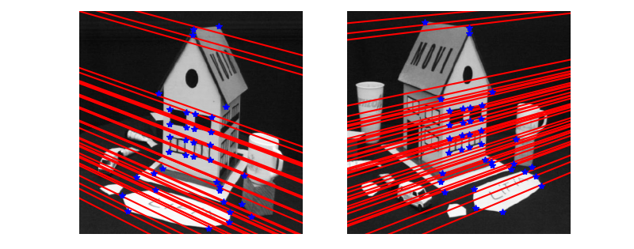
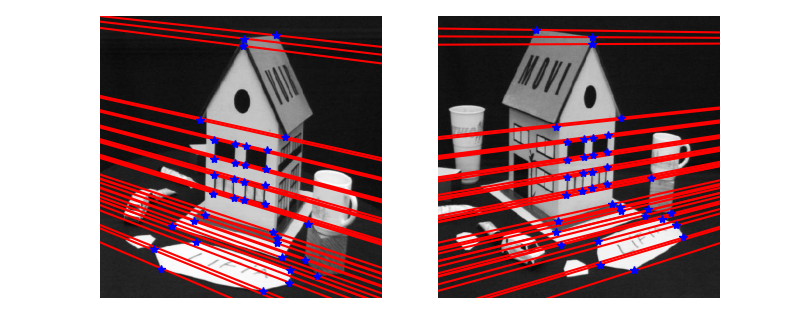
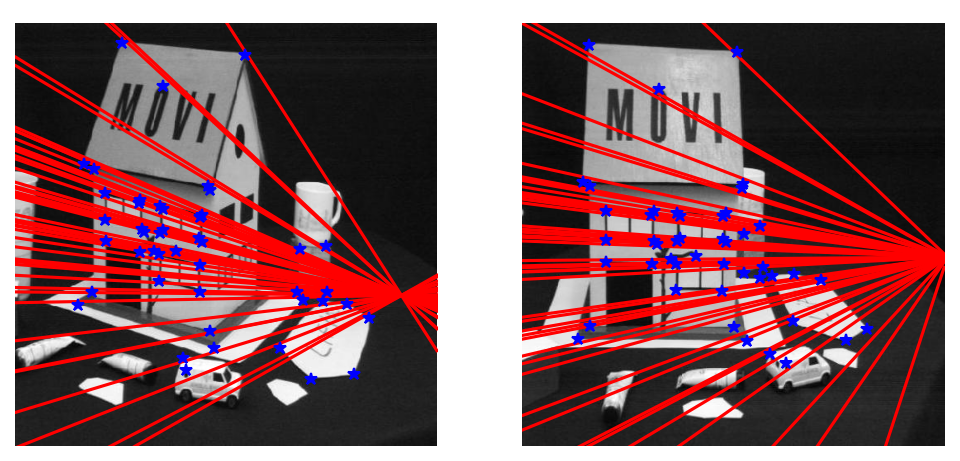
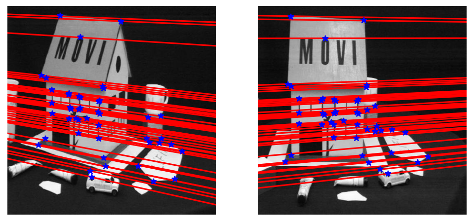
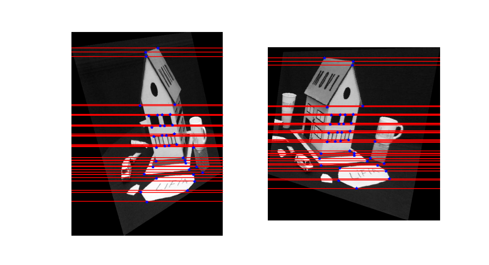
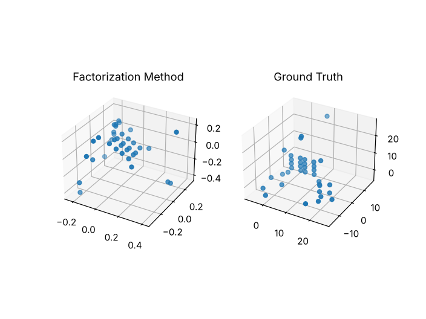
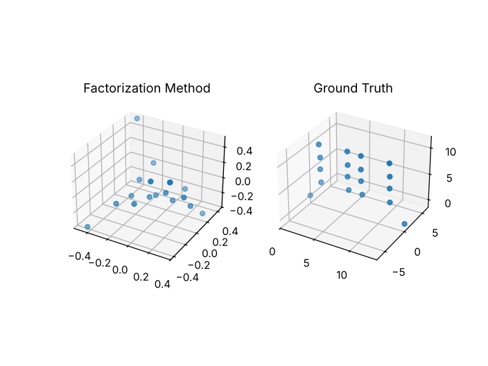

Assignment 3 explored image stitching from a series of perspective images and we created these cheeky little panorama images! Assignment 4 aims to explore the "opposite" problem, what if we shot a series of images of the same scene from different perspectives? How can we find the relationship between the images? What points correspond to the same feature in both images? How are the cameras related? What if the objects are 3-dimensional and actually have depth? (Cue mind-blown noises.) So along the same lines as Assignment 3, let's start by assuming we have the same object in image 1 and in image 2. Then the fundamental matrix is a \(3 \times 3\) matrix that relates the two images of the same scene. For matching points \(x\) in image 1 and \(x'\) in image 2, the fundamental matrix \(F\) satisfies:
\[ {x'}^{T} F x = 0 \]The fundamental matrix is unfortunately not magical, and does not tell us the exact correspondence between points in the two images. Instead, it tells us that for a point \(x\) in image 1, the corresponding point \(x'\) in image 2 must lie on an epipolar line. This line is obtained from:
\[ l' = Fx \]This is the line in image 2. In the other direction, the epipolar line in image 1 that belongs to a point \(x'\) in image 2 is \(l = F^{T}x'\).
As a guideline to make this report a bit more cohesive, here are all the steps of the Eight-Point Algorithm:
Similar to when we estimated homographies in Assignment 3, we're trying to fill in the entries of the \(3 \times 3\) fundamental matrix by using known values of \((x,y)\) and \((x',y')\). A \(3 \times 3\) matrix has 9 entries, and since the fundamental matrix is only defined up to scale, we can fix one of the entries to 1 (or, equivalently, fix \(\|f\| = 1\)), which leaves 8 unknowns. This means we need at least 8 pairs of corresponding points to solve for the fundamental matrix. This essentially describes the eight-point algorithm. (The rank-2 constraint removes one more degree of freedom, so \(F\) really has 7, but the linear method does not use that constraint.) In practice, we can usually identify far more than eight matching features, so we can use least squares. The more points we have, the better our estimate of \(F\) will be.
First, let's describe our points \((x,y)\) and \((x',y')\) in homogeneous coordinates. As discussed in Assignment 3, this allows translations to be represented using matrix multiplication. The fundamental matrix contains nine unknown entries:
\[F= \begin{bmatrix} f_{11} & f_{12} & f_{13}\\ f_{21} & f_{22} & f_{23}\\ f_{31} & f_{32} & f_{33} \end{bmatrix} \]Substituting the homogeneous coordinates into the epipolar constraint \({x'}^{T} F x = 0\) gives:
\[x'x f_{11}+x'y f_{12}+x' f_{13}+y'x f_{21}+y'y f_{22}+y' f_{23}+x f_{31}+y f_{32}+f_{33}=0\]Notice that the equation is linear in the entries of the fundamental matrix \(F\).
Each point correspondence contributes one linear equation. Stacking all correspondences together produces:
\[Af = 0\]where
\[f=\begin{bmatrix}f_{11} &f_{12} &f_{13} &f_{21} &f_{22} &f_{23} &f_{31} &f_{32} &f_{33}\end{bmatrix}^{T}\]and \(A\) is the \(N \times 9\) matrix
\[ A= \begin{bmatrix} x_1x'_1 & y_1x'_1 & x'_1 & x_1y'_1 & y_1y'_1 & y'_1 & x_1 & y_1 & 1 \\ x_2x'_2 & y_2x'_2 & x'_2 & x_2y'_2 & y_2y'_2 & y'_2 & x_2 & y_2 & 1 \\ \vdots & \vdots & \vdots & \vdots & \vdots & \vdots & \vdots & \vdots & \vdots \\ x_Nx'_N & y_Nx'_N & x'_N & x_Ny'_N & y_Ny'_N & y'_N & x_N & y_N & 1 \end{bmatrix} \]In theory, \(Af = 0\) has an exact solution; however, in practice point correspondences contain noise and feature matches are not perfect, so the equations contradict each other slightly. We therefore reframe the problem as minimizing \(\|Af\|\) subject to \(\|f\| = 1\). This is now a least-squares problem and can be solved using the singular value decomposition (SVD). The solution is the right singular vector of \(A\) corresponding to the smallest singular value.
Alas, we've been pulled back into the depths of undergrad linear algebra... when I first heard those words in this class, my soul was transported to a time when I was more desperate and naive. As a refresher (for myself mostly), the SVD of a matrix \(A\) is the decomposition of \(A\) into three matrices \(U\), \(\Sigma\), and \(V\) such that \(A = U \Sigma V^{T}\). The columns of \(U\) are the left singular vectors (the eigenvectors of \(A A^T\)), the columns of \(V\) are the right singular vectors (the eigenvectors of \(A^T A\)), and \(\Sigma\) is a diagonal matrix containing the singular values in descending order. In one sentence, the singular values quantify the importance of each component in the decomposition. The solution to our problem is the right singular vector corresponding to the smallest singular value, which is the last column of \(V\) (the last row of \(V^T\)). This is because the smallest singular value corresponds to the direction in which \(A\) has the least effect, and we want to find a vector \(f\) that minimizes \(\|Af\|\).
Of course, things aren't always so straightforward... The fundamental matrix maps a point in one image to a line in the other image (a one-dimensional set of points rather than a two-dimensional one), so \(F\) has rank 2. This means that the last singular value of \(F\) is zero, and we need to enforce this constraint. To do this, we perform an SVD on \(F = U \Sigma V^{T}\), set the last singular value to zero, and then recompute \(F = U \Sigma' V^{T}\), where \(\Sigma'\) is \(\Sigma\) with its last singular value set to zero.
So we've got two images here of the same scene from different perspectives. Using these images and their corresponding matched points, we minimize \(\|Af\|\) subject to \(\|f\| = 1\), and then use the SVD of \(A\) and the last column of \(V\) to compute the fundamental matrix \(F\).
--- SVD of F (before rank-2 constraint) --- Reshaped into F (before rank-2 constraint): [[ 4.9758e-06 -7.2020e-06 -1.5044e-03] [-6.1496e-06 -3.8290e-07 -1.1361e-02] [-3.5231e-03 1.4145e-02 9.9983e-01]] U: [[-0.001504 -0.081389 0.996681] [-0.01136 -0.996617 -0.081401] [ 0.999934 -0.011444 0.000575]] Singular values (s1, s2, s3): [1. 0.000167 0.000004] V^T: [[-0.003523 0.014144 0.999894] [ 0.275064 -0.961316 0.014568] [ 0.961419 0.275086 -0.000504]] det(F) = 5.980685960033649e-10 rank = 3
Looking at the singular values, which are \(s_1 = 1\), \(s_2 = 1.67 \times 10^{-4}\), and \(s_3 = 3.6 \times 10^{-6}\), we can see that the third singular value is very small, but still non-zero (\(\det F \approx 6 \times 10^{-10}\), so \(F\) has rank 3). So we set \(s_3\) to zero and recompute \(F\), which gives a matrix with \(\det F \approx 0\) and rank 2.
--- F (after rank-2 constraint) --- Reshaped into F (after rank-2 constraint): [[ 1.5522e-06 -8.1816e-06 -1.5044e-03] [-5.8700e-06 -3.0289e-07 -1.1361e-02] [-3.5231e-03 1.4145e-02 9.9983e-01]] det(F) after = 1.458904817096295e-25 rank = 2
So now we have our fundamental matrix! You can see the implementation details below.
def lls_eight_point_alg(points1, points2):
n = points1.shape[0]
# Each correspondence gives one row of W such that W f = 0, f = vec(F) (row-major)
# p2^T F p1 = 0 -> [u2*u1, u2*v1, u2, v2*u1, v2*v1, v2, u1, v1, 1] . f = 0
W = np.zeros((n, 9))
for i in range(n):
u1, v1, _ = points1[i]
u2, v2, _ = points2[i]
W[i] = [u2*u1, u2*v1, u2, v2*u1, v2*v1, v2, u1, v1, 1]
# Least-squares solution of W f = 0, ||f|| = 1: right singular vector of the
# smallest singular value
_, _, Vt = np.linalg.svd(W)
F = Vt[-1].reshape(3, 3)
# Enforce rank 2: zero out the smallest singular value of F
U, S, Vt = np.linalg.svd(F)
S[2] = 0
return U @ np.diag(S) @ Vt
So our algorithm as is can be unstable, because the entries of \(A\) are products of pixel coordinates, which can be large (on the order of \(10^5\)) next to the constant 1 in the last column of \(A\). So let's normalize before solving for \(F\). This is done by translating the points so that their centroid is at the origin, and scaling them so that the mean distance from the origin is \(\sqrt{2}\). This improves numerical conditioning of the least-squares problem and leads to more stable fundamental matrix estimates. Then at the end, we denormalize the fundamental matrix using \(F = T_2^{T} \hat{F} T_1\), where \(\hat{F}\) is the matrix estimated on the normalized points and \(T_1, T_2\) are the normalization transforms of images 1 and 2. This follows from \({q'}^{T}\hat{F}q = {p'}^{T}(T_2^{T}\hat{F}T_1)p\) with \(q = T_1 p\) and \(q' = T_2 p'\).
F (LLS), unit Frobenius norm: [[ 1.5522e-06 -8.1816e-06 -1.5044e-03] [-5.8700e-06 -3.0289e-07 -1.1361e-02] [-3.5231e-03 1.4145e-02 9.9983e-01]] F (Normalized), unit Frobenius norm: [[ 4.4551e-06 -3.6394e-05 6.0312e-04] [-3.3506e-05 -2.3222e-06 -4.3915e-02] [-5.8476e-03 6.0309e-02 9.9720e-01]]


def normalized_eight_point_alg(points1, points2):
def normalization_matrix(pts):
# Translate centroid to origin, scale so mean distance from origin is sqrt(2)
mean = pts[:, :2].mean(axis=0)
d = np.sqrt(((pts[:, :2] - mean) ** 2).sum(axis=1)).mean()
s = np.sqrt(2) / d
return np.array([[s, 0, -s * mean[0]],
[0, s, -s * mean[1]],
[0, 0, 1]])
T1 = normalization_matrix(points1)
T2 = normalization_matrix(points2)
q1 = (T1 @ points1.T).T
q2 = (T2 @ points2.T).T
F_hat = lls_eight_point_alg(q1, q2) # includes rank-2 enforcement
# Undo normalization: q2^T F_hat q1 = p2^T (T2^T F_hat T1) p1
return T2.T @ F_hat @ T1
Now that we have our fundamental matrix, we can determine how good it is, plus determine the epipolar lines. Given,
\[l' = Fx\]and line
\[ax + by + c = 0\]and distance from point to a line
\[d = \frac{|ax_0 + by_0 + c|}{\sqrt{a^2 + b^2}}\]To measure the distance in image 1, I take each matched point \(x'_i\) in image 2, compute the epipolar line it defines in image 1, \(l_i = F^{T}x'_i = (a, b, c)\), and then compute the distance from the matching point \(x_i = (x_0, y_0, 1)\) to that line with the formula above. The distance in image 2 is computed the same way with the roles swapped (\(F^{T}\) is passed in place of \(F\)). Average over all matches. The smaller the average, the better the fundamental matrix.
In code, compute_distance_to_epipolar_lines() is fully vectorized. F.T @ points2.T gives all the lines \((a, b, c)\) at once (a \(3 \times N\) array). Because the points are in homogeneous coordinates \((x, y, 1)\),
the numerator \(|ax_0 + by_0 + c|\) is the absolute value of the column-wise dot product of the lines with points1.T. The denominator is \(\sqrt{a^2 + b^2}\), and the function returns the mean of the ratio.
For set1, the normalized eight-point algorithm gives an average distance of 0.890573 pixels in image 1 and 0.828668 pixels in image 2. The unnormalized algorithm gives 28.03 and 25.16 pixels, so normalization brings the error down by a factor of about 30.
| Dataset | LLS | Normalized | ||
|---|---|---|---|---|
| Image 1 | Image 2 | Image 1 | Image 2 | |
| set1 | 28.03 | 25.16 | 0.89 | 0.83 |
| set2 | 9.70 | 14.57 | 0.89 | 0.89 |
def compute_distance_to_epipolar_lines(points1, points2, F):
# Epipolar line in image 1 for each point in image 2: l = F^T p2 = (a, b, c)
lines = F.T @ points2.T # 3 x N
num = np.abs(np.sum(lines * points1.T, axis=0)) # |a*x + b*y + c|
den = np.sqrt(lines[0] ** 2 + lines[1] ** 2) # sqrt(a^2 + b^2)
return np.mean(num / den)
I ran the same two algorithms on the second image pair (set2). The fundamental matrices below are scaled to unit Frobenius norm. The distances are in the table above. As for set1, normalization reduces the average distance from several pixels to under one pixel.
F (LLS), unit Frobenius norm: [[-5.6309e-06 2.7498e-05 -6.4265e-03] [-2.7762e-05 -6.7475e-06 1.5218e-02] [ 1.0762e-02 -1.2252e-02 -9.9973e-01]] F (Normalized), unit Frobenius norm: [[-1.3335e-05 2.2205e-04 -1.3780e-02] [ 3.2032e-04 2.8373e-05 6.1962e-01] [ 2.0867e-02 -7.5224e-01 -2.2266e-01]]


Now that we have the fundamental matrix, we can use it to find the homographies for image rectification. Why rectify? Well, we know that the match for a point in image 1 lies on the epipolar line in image 2. If we warp the epipolar lines to be horizontal, we can simplify the stereo matching process, effectively reducing the 2D search to a 1D search along the horizontal axis. This makes stereo matching simpler, faster, and less error-prone.
In epipolar geometry, the epipole is the point where all the epipolar lines intersect, and we need to do two things with it. The first is to find it. The second comes from our goal: we want all the epipolar lines to be horizontal, and therefore parallel to one another, which means moving the epipole to infinity.
To find the epipoles, we use the properties \(F e_1 = 0\) and \(F^T e_2 = 0\) (where \(e_1\) is the epipole in image 1 and \(e_2\) is the epipole in image 2), which tell us that each epipole is a null-space vector of \(F\) or \(F^T\). In the singular value decomposition \(F = U \Sigma V^T\), the right singular vector corresponding to the smallest singular value (the last row of \(V^T\)) gives us the null space. For image 2, we perform the SVD on \(F^T\). For image set 1, the epipoles are below.
e1 [-1.30078593e+03 -1.42661359e+02 1.00000000e+00] e2 [1.65422409e+03 4.54263026e+01 1.00000000e+00]
def compute_epipole(F):
# The epipole e in image 2 satisfies e^T F = 0, i.e. F^T e = 0, so e spans the
# null space of F^T. With F^T = U S V^T, that is the right singular vector of
# the smallest singular value (last row of V^T).
_, _, Vt = np.linalg.svd(F.T)
e = Vt[-1]
return e / e[2] # homogeneous coordinates [x y 1]
Now that we have the locations of the epipoles, we can move on to constructing our homography. Our goal is to make all the epipolar lines horizontal through a series of transformations. First, we want a translation matrix \(T\), which moves the image centre to the origin; this makes the rotation easier. Next, we want a rotation matrix \(R\), which takes the epipole from its slanted position onto the horizontal axis. Then we want a projective warp \(G\), which maps the epipole to infinity. Lastly, we apply \(T^{-1}\) at the very end to move our coordinate system back to where it was before it was translated. Explicitly, for an image of width \(w\) and height \(h\),
\[ T = \begin{bmatrix} 1 & 0 & -\frac{w}{2} \\ 0 & 1 & -\frac{h}{2} \\ 0 & 0 & 1 \end{bmatrix}. \]If the translated epipole is \(Te = (\tilde{e}_1, \tilde{e}_2, 1)^T\), the rotation is
\[ R = \begin{bmatrix} \alpha \dfrac{\tilde{e}_1}{\sqrt{\tilde{e}_1^2 + \tilde{e}_2^2}} & \alpha \dfrac{\tilde{e}_2}{\sqrt{\tilde{e}_1^2 + \tilde{e}_2^2}} & 0 \\ -\alpha \dfrac{\tilde{e}_2}{\sqrt{\tilde{e}_1^2 + \tilde{e}_2^2}} & \alpha \dfrac{\tilde{e}_1}{\sqrt{\tilde{e}_1^2 + \tilde{e}_2^2}} & 0 \\ 0 & 0 & 1 \end{bmatrix}, \]where \(\alpha = 1\) if \(\tilde{e}_1 \geq 0\) and \(\alpha = -1\) otherwise. After the rotation, the epipole sits at \((f, 0, 1)^T\) on the horizontal axis, and the projective warp that sends it to \((f, 0, 0)^T\) is
\[ G = \begin{bmatrix} 1 & 0 & 0 \\ 0 & 1 & 0 \\ -\frac{1}{f} & 0 & 1 \end{bmatrix}. \]Putting them together gives
\[H = T^{-1} G R T.\]
def compute_H(e, im):
height, width = im.shape[0], im.shape[1]
e = e / e[2]
# 1. Translation: move the image centre to the origin
T = np.array([[1, 0, -width / 2.0],
[0, 1, -height / 2.0],
[0, 0, 1]])
e_t = T @ e # translated epipole (e1, e2, 1)
e1, e2 = e_t[0], e_t[1]
# 2. Rotation: put the translated epipole on the x-axis at (f, 0, 1)
alpha = 1.0 if e1 >= 0 else -1.0
norm = np.sqrt(e1 ** 2 + e2 ** 2)
R = np.array([[ alpha * e1 / norm, alpha * e2 / norm, 0],
[-alpha * e2 / norm, alpha * e1 / norm, 0],
[0, 0, 1]])
f = (R @ e_t)[0]
# 3. Send (f, 0, 1) to (f, 0, 0): a point at infinity on the horizontal axis
G = np.array([[1, 0, 0],
[0, 1, 0],
[-1.0 / f, 0, 1]])
# 4. Undo the translation
return np.linalg.inv(T) @ G @ R @ T
The last thing that we'll do is find a matching pair of homographies \(H_1\) and \(H_2\). Up to this point, we've only computed a homography for image 2. However, the two homographies need to be consistent with one another so that matching points end up in the same row of both rectified images, so there is an additional step to correct for that. In my implementation, I've kept \(H_2\) as is and changed \(H_1\) to match. We're looking for an \(H_1\) that minimizes the sum of squared differences between the corresponding points of the images, or \( \sum_i \| H_1 p_i - H_2 p'_i \|^2 \). In this assignment, without derivation, I can tell you that \(H_1 = H_A H_2 M\), where \(M\) satisfies \(F = [e_2]_\times M\) and is computed as
\[ M = [e_2]_\times F + e_2 v^T, \qquad v^T = [1\ 1\ 1], \]where \([e_2]_\times\) is the cross-product matrix of \(e_2\). For a vector \(u = (u_1, u_2, u_3)^T\),
\[ [u]_\times = \begin{bmatrix} 0 & -u_3 & u_2 \\ u_3 & 0 & -u_1 \\ -u_2 & u_1 & 0 \end{bmatrix}, \]and \(H_A\) has the form
\[ H_A = \begin{bmatrix} a_1 & a_2 & a_3 \\ 0 & 1 & 0 \\ 0 & 0 & 1 \end{bmatrix}. \]where \((a_1, a_2, a_3)\) are the elements of a vector \(a\) that we still have to solve for. This form of \(H_A\) comes from Hartley's rectification method. Notice that we're only changing the \(x\)-coordinates of the points, and not the \(y\)-coordinates. This is because \(H_2\) already makes the epipolar lines horizontal, and we don't want to ruin the rectification, only to slide or stretch the points horizontally.
The hatted quantities in the least-squares problem are the points after the partial warp. Let \(H_0 = H_2 M\), so that \(H_1 = H_A H_0\). Then \(\hat{p}_i = H_0 p_i\) and \(\hat{p}'_i = H_2 p'_i\), each divided by its third coordinate, and \((\hat{x}_i, \hat{y}_i)\) and \((\hat{x}'_i, \hat{y}'_i)\) are their coordinates. \(M\) is a homography that is consistent with \(F\) (in the sense that \(F = [e_2]_\times M\)), and it already lines up the rows of the two images, but it is not unique, which is why \(H_A\) is needed.
Because the \(y\)-coordinates already agree, this reduces to making the \(x\)-coordinates agree, which is the linear least-squares problem \( W a = b \) with
\[ W = \begin{bmatrix} \hat{x}_1 & \hat{y}_1 & 1 \\ \vdots & \vdots & \vdots \\ \hat{x}_N & \hat{y}_N & 1 \end{bmatrix}, \qquad b = \begin{bmatrix} \hat{x}'_1 \\ \vdots \\ \hat{x}'_N \end{bmatrix}. \]Solve \(a = (W^T W)^{-1} W^T b\) to get \(a = (a_1, a_2, a_3)^T\).
def compute_matching_homographies(e2, F, im2, points1, points2):
e2 = e2 / e2[2]
H2 = compute_H(e2, im2)
# Cross-product matrix [e]_x, so that [e]_x v = e x v
e_x = np.array([[0, -e2[2], e2[1]],
[e2[2], 0, -e2[0]],
[-e2[1], e2[0], 0]])
v = np.array([[1.0, 1.0, 1.0]])
M = e_x @ F + np.outer(e2, v)
# H0 = H2 M maps image 1 into the rectified frame (up to the free shear H_A)
H0 = H2 @ M
p1_hat = (H0 @ points1.T).T
p1_hat /= p1_hat[:, 2:3]
p2_hat = (H2 @ points2.T).T
p2_hat /= p2_hat[:, 2:3]
# Least squares W a = b: choose (a1, a2, a3) so that x-coordinates line up
W = p1_hat # rows [x1_hat, y1_hat, 1]
b = p2_hat[:, 0] # x2_hat
a, _, _, _ = np.linalg.lstsq(W, b, rcond=None)
H_A = np.array([[a[0], a[1], a[2]],
[0, 1, 0],
[0, 0, 1]])
H1 = H_A @ H0
return H1, H2

Why does rectification make it easier to find corresponding points? In the rectified pair, the epipolar lines are parallel and horizontal, so a point and its match lie on the same row. For set1, matched points differ by only 0.86 pixels in the vertical direction on average. Instead of searching a slanted line in a 2D image, we only have to search along one row (a 1D search), which is faster, has fewer false matches, and lets simple stereo matching methods work directly on rows.
In case you thought the assignment topic so far has been clickbait, I'm here to tell you that it is not. We can do 3D reconstruction! The Tomasi-Kanade factorization method takes multiple images of an object and reconstructs its 3D shape and the camera motion under a certain set of assumptions.
Suppose we track \(N\) points through \(K\) images. For every image, we have an \((x, y)\) location for each feature. We can then construct an observation matrix, \(D\), of size \(2K \times N\). Since we have two images (\(K = 2\)), the matrix is \(4 \times N\).
\[ D = \begin{bmatrix} x_{11} & x_{12} & \cdots & x_{1N} \\ y_{11} & y_{12} & \cdots & y_{1N} \\ x_{21} & x_{22} & \cdots & x_{2N} \\ y_{21} & y_{22} & \cdots & y_{2N} \end{bmatrix}. \]Here \((x_{ij}, y_{ij})\) is the location of feature \(j\) in image \(i\). Each pair of rows corresponds to one camera image, and each column is one tracked feature point. Then, we centre each row by subtracting its mean, which removes the camera translation (also simplifying the matrix), so that \(D\) becomes the product of a motion matrix and a structure matrix. The Tomasi-Kanade factorization method assumes an orthographic (affine) camera model. Instead of perspective projection, the model assumes that the image coordinates depend linearly on the 3D coordinates, which is a good approximation when the object is far from the camera relative to its depth variation. This lets us factor \(D\) into a motion matrix \(M\) and a structure matrix \(S\), so that \(D = M S\). Here, \(S\) contains all the 3D points,
\[S = \begin{bmatrix} X_1 & X_2 & \cdots & X_N \\ Y_1 & Y_2 & \cdots & Y_N \\ Z_1 & Z_2 & \cdots & Z_N \end{bmatrix}\]The size of \(S\) is \(3 \times N\), with each column corresponding to one reconstructed 3D point \((X_j, Y_j, Z_j)^T\). \(M\) is the motion matrix, and has the form
\[M = \begin{bmatrix} r_{11} & r_{12} & r_{13} \\ r_{21} & r_{22} & r_{23} \\ \vdots & \vdots & \vdots \\ r_{2K,1} & r_{2K,2} & r_{2K,3} \end{bmatrix}.\]The size of \(M\) is \(2K \times 3\) (here \(4 \times 3\)), and each pair of rows describes one camera's viewing directions (its image \(x\)-axis and \(y\)-axis).
One of the properties of the (centred) observation matrix is that its rank is at most 3. This will be important later when we do singular value decomposition! One way to think about it is that in \(D = M S\), \(M\) only has three columns, so the rank of \(D\) is 3 or less. Another way to think about it is that we only have three independent variables in 3D reconstruction, \(X\), \(Y\), and \(Z\), thus we should only have three linearly independent statements.
After taking the SVD of the centred \(D\) for the set1 images, \(D = U \Sigma V^T\), I get singular values of 959.585, 540.476, 184.432, and 27.915. (I write the diagonal matrix of singular values as \(\Sigma\) to avoid a clash with the observation matrix \(D\).) There are four non-zero singular values because \(D\) has only four rows, so it has at most four singular values, and the fourth is not exactly zero in practice: real cameras are not perfectly affine, and the matched points are noisy and pixel-quantized. In the idealized version, with exactly affine cameras and perfect noise-free matches, \(D = M S\) would have rank 3, so we would expect exactly three non-zero singular values (and the fourth would be zero). So now, we truncate the SVD to its top three components to get a good approximation of \(D\) back:
\[D \approx U_3 \Sigma_3 V_3^T\]where \(U_3\) holds the first three columns of \(U\), \(\Sigma_3\) is the \(3 \times 3\) diagonal matrix of the top three singular values, and \(V_3^T\) holds the first three rows of \(V^T\). To recover \(M\) and \(S\) from the approximated \(D\), my code uses \(M = U_3 \Sigma_3\) and \(S = V_3^T\). (Splitting the singular values evenly, with \(M = U_3 \Sigma_3^{1/2}\) and \(S = \Sigma_3^{1/2} V_3^T\), is equally valid, because the two choices differ only by an invertible matrix; see the next paragraph.)
In summary, my implementation does the following:
This reconstruction is not unique: for any invertible \(3 \times 3\) matrix \(A\), we have \(D = (MA)(A^{-1}S)\), so there are many pairs \((M, S)\) that produce the same \(D\). The SVD therefore gives the structure only up to such a transform. This is why my reconstruction has the same overall shape as the ground truth but is rotated and at a different scale (compare the axis ranges in the figure below, about \(\pm 0.4\) versus 0 to 25). The best linear map that I'm able to construct from my reconstruction to the ground truth fits well, leaving around 9% relative error. The rest of the difference comes from noise, from the affine approximation, and from the fact that I did not enforce any metric constraints (such as orthonormal rows of \(M\)) that would remove a possible leftover shear.

I repeated the process on the set1_subset data, which uses only 18 of the points, and the reconstruction is shown below.

set1_subset dataset.| Dataset | Number of points | \(\sigma_1\) | \(\sigma_2\) | \(\sigma_3\) | \(\sigma_4\) |
|---|---|---|---|---|---|
| set1 | 37 | 959.585 | 540.476 | 184.432 | 27.915 |
set1_subset | 18 | 264.544 | 210.061 | 7.219 | 5.129 |
If you feel as if the reconstruction looks off, you're right! This is because the 18 points are almost coplanar. (Centring the ground-truth 3D points of the subset and taking their SVD gives singular values of about 17.3, 14.2, and 0.38, so they really do lie close to a plane.) In the singular values above, set1 shows a clear fall-off after the third value (184.4 down to 27.9), as expected for a rank-3 structure plus noise. For the subset, the fall-off instead occurs after the second value (210.1 down to 7.2), and the third and fourth values are very similar (7.2 and 5.1). This is how I know the points are close to coplanar: the points effectively span only two dimensions, so the third dimension is dominated by noise. That is why the subset reconstruction is flattened and distorted and no longer resembles the ground truth. All of the singular values are also smaller for the subset, because there are fewer points.
def factorization_method(points_im1, points_im2):
# Measurement matrix D (2M x N): x and y coordinates of every point in each image.
# Here M = 2 cameras, so D is 4 x N.
D = np.vstack((points_im1[:, 0], points_im1[:, 1],
points_im2[:, 0], points_im2[:, 1]))
# Center each row at the centroid of its points. This removes the translation of
# the affine cameras, leaving D = (motion) * (structure) with rank 3.
D = D - D.mean(axis=1, keepdims=True)
# SVD of the centered measurement matrix
U, S, Vt = np.linalg.svd(D, full_matrices=False)
print("Singular values of D:", S)
# Keep only the top 3 singular values (rank-3 factorization D ~ M S)
motion = U[:, :3] @ np.diag(S[:3]) # 2M x 3 : camera (motion) matrix
structure = Vt[:3, :] # 3 x N : 3D structure
return structure, motion